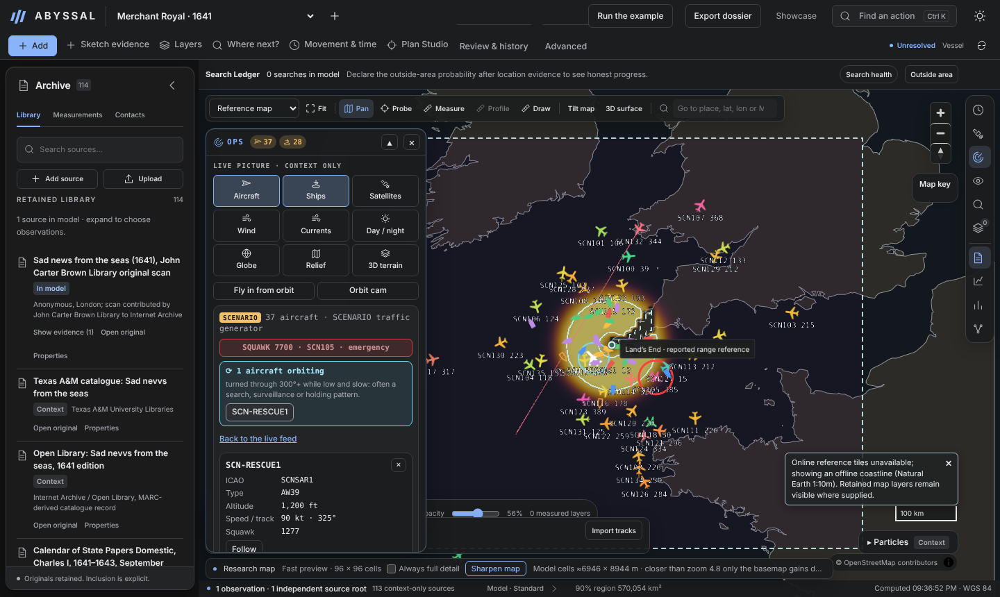
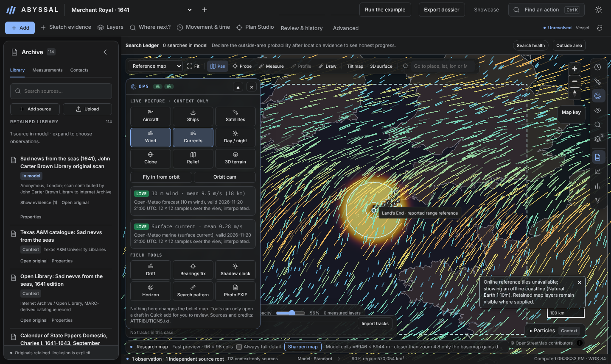
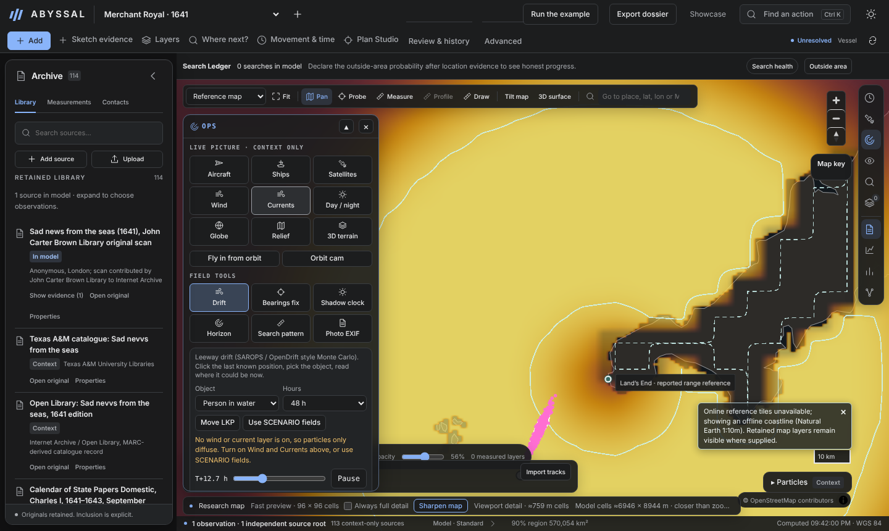
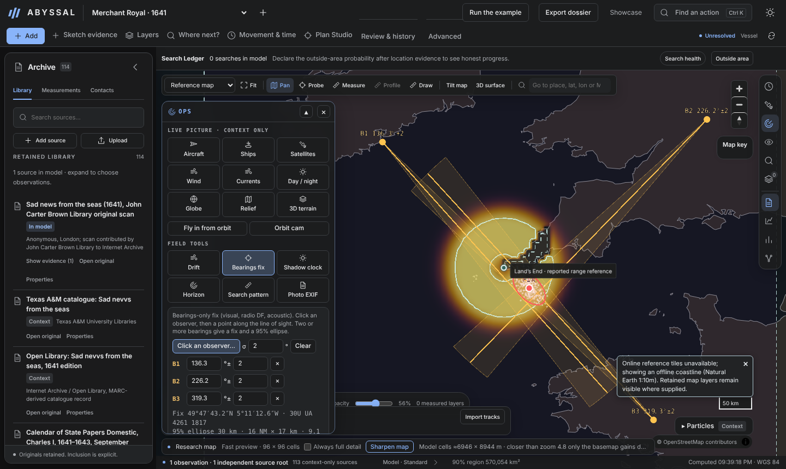
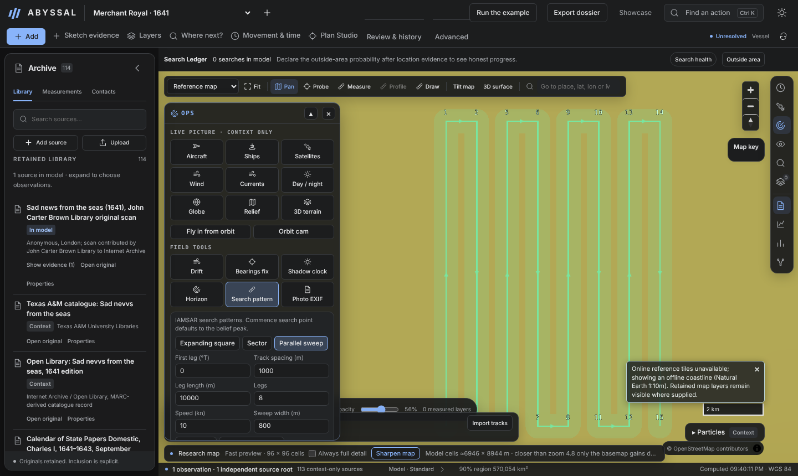
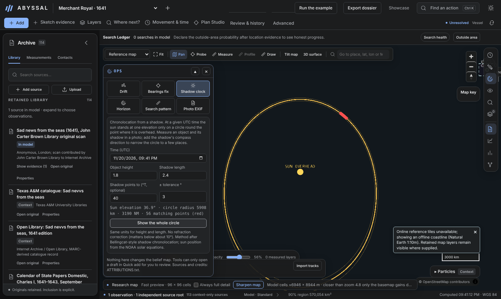
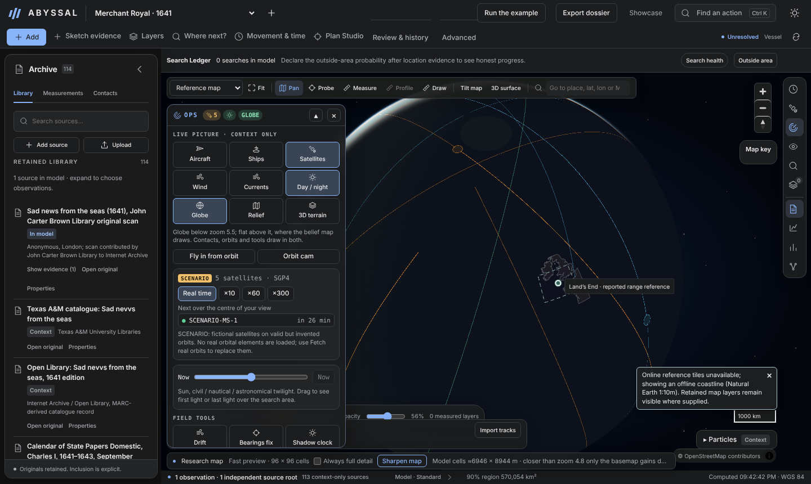
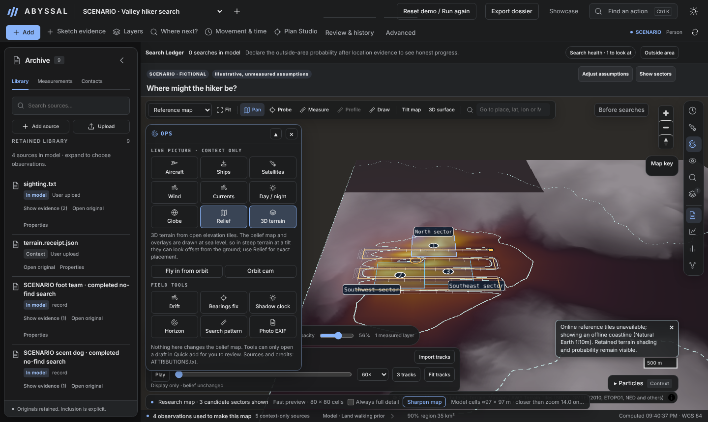
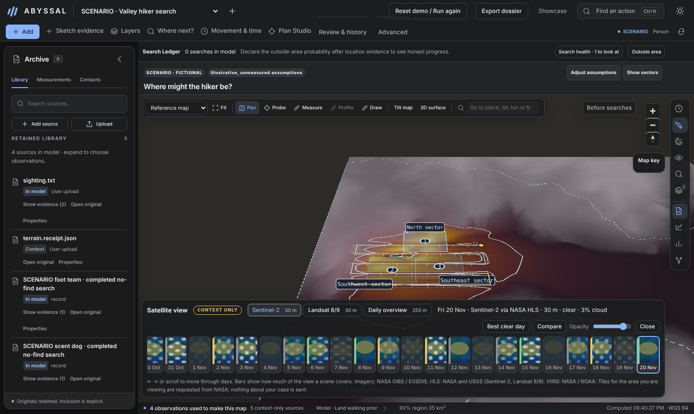
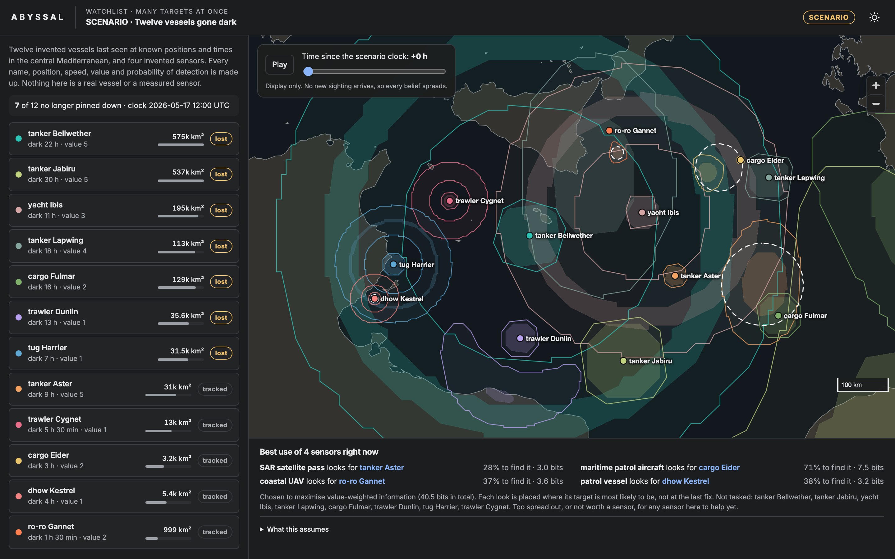

From Static Grids to a Living Ocean
A visual walkthrough of the Ops Console, physical field geometry, satellite time-machines, track-gap analytics, and tracking twelve dark vessels at once.
Up to this point we have focused on the mathematical spine of ABYSSAL: priors, provenance roots, negative searches, and expected value. Yet real analysts do not work in an abstract grid—they work in a moving, weather-beaten world of winds, currents, circling helicopters, silent transponders, orbital passes, and terrain shadows.
Press O anywhere inside ABYSSAL (or click the radar icon on the right rail) and the workspace opens its Ops Console—seventeen live situational-awareness and field-geometry tools built around one strict rule: everything in the Ops Console is Context. Nothing here silently alters a belief map. Instead, whenever a tool spots something meaningful—an orbiting search helicopter, a drifted life-raft cloud, a vessel's dark-gap reachability ellipse—one click proposes it as an editable Draft for a human to review and admit.
1. Live air & sea picture—with Orbit Detection
The live picture streams open ADS-B aircraft traffic (with altitude colour-coding, trails, smooth dead reckoning, follow-camera, and automatic emergency squawk alerts for 7500, 7600, and 7700) alongside live AIS maritime shipping. Two analytical detectors run directly on top of the live streams:
- Orbiting-aircraft detector: An aircraft flying low and slow that turns continuously through more than 300° is flagged
⟳ ORBITING—the classic signature of an active search, surveillance, or holding pattern. With one click, an analyst can propose that orbit (expanded by an assumed sweep radius) as a draft completed search—turning live flight-tracking straight into negative evidence once confirmed with a POD. - Dark-vessel detector: Any AIS ship that falls silent for more than 15 minutes is flagged
DARKwith a growing kinematic reach ring representing how far it could have steamed since its last transmission.

SCENARIO traffic preview): Aircraft heading icons, trails, maritime AIS vessels, and an automated ⟳ ORBITING flag ready to be proposed as a draft negative-evidence sweep.
2. Physical field geometry: Drift, Bearings, and Shadow Chronolocation
Field investigators rely on classical physical and geometric reasoning to turn raw clues into spatial regions. ABYSSAL brings four of the most powerful field-geometry tools directly onto the map canvas:
- Leeway drift Monte Carlo: Click a last known position, choose an object class (person in water, life raft, capsized hull—using approximate leeway coefficients after Allen & Plourde 1999), and watch 700 stochastic particles advect through wind and current fields for up to 72 hours. One click proposes the resulting 90% containment circle as a draft observation.
- Bearings-only fix (Monte Carlo 95% ellipse): Drop two or more direction-finding bearings with angular uncertainty wedges; ABYSSAL samples intersections to construct the 95% confidence fix ellipse directly on the map.
- IAMSAR search patterns: Generate standard International Aeronautical and Maritime Search and Rescue patterns—Expanding Square (SS), Sector Search (VS), or Parallel Sweep (PS)—centred on the belief peak, instantly reporting total transit time at speed, the exact percentage of belief enclosed inside the sweep, and one-click GPX export.
- Shadow Clock (chronolocation) & Photo EXIF: Drop a JPEG to extract GPS, camera azimuth, field-of-view cone, and UTC timestamp—or enter an object's height, shadow length, and UTC time to trace the exact circle of equal solar elevation on Earth where the photograph could have been taken, then intersect it with the shadow's compass bearing to narrow the location down to a handful of candidate points.




3. Orbital radar, 3D terrain, and the Satellite View Time Machine
When you zoom out below zoom 5.5, the flat map transitions smoothly into an interactive 3D globe with atmosphere, stars, day/night twilight terminators (civil, nautical, and astronomical twilight on a \(\pm 12\text{ h}\) scrubber), and real SGP4 orbital propagation tracking imaging satellites, their ground swaths, and "next pass over your view" countdowns. Zoom back into alpine valleys and toggle 3D Terrain & Relief to drape the workspace over open elevation tiles—or press I to open the Satellite View Time Machine: a 30-day strip of dated NASA HLS (Sentinel-2 / Landsat 8–9) and daily VIIRS scenes showing exact coverage and cloud percentage per day, a one-click Best clear day jump, and an A/B crossfade wiper.

SCENARIO orbits offline).

4. Track gaps: "Where could it have gone while dark?"
When you import an AIS, GPX, KML, IGC, or NMEA track, silent gaps often matter more than the points that were transmitted. Suppose a vessel transmits Fix \(A\) at time \(t_A\), switches off its transponder for \(\Delta t\) hours, and reappears at Fix \(B\) at distance \(D\). Under an assumed maximum speed \(v_{\max}\) (defaulting transparently to \(1.25\times\) the vessel's 90th-percentile speed outside gaps), every point \(x\) the vessel could physically have visited while dark must satisfy the triangle-budget inequality:
That is the exact geometric definition of an ellipse with foci at \(A\) and \(B\), semi-major axis \(a = \tfrac{1}{2}v_{\max}\Delta t\), focal half-distance \(c = \tfrac{1}{2}D\), and semi-minor axis \(b = \sqrt{a^2 - c^2}\). And whenever \(D > v_{\max}\Delta t\), no physical trajectory exists at that speed—ABYSSAL flags the segment immediately as an impossible jump (spoofing / speed anomaly). Try the geometry yourself below.
Interactive: Track-gap reachability ellipse & spoofing check
Push Fix separation \(D\) past the travel budget \(v_{\max}\Delta t\) to trigger the impossible-jump spoofing flag. In the real Ops Console, this ellipse ignores land and currents (stated explicitly) and can be proposed as an area draft in one click.
5. Watchlist: tracking many dark targets at once
For most of its early life, ABYSSAL assumed you were looking for one lost thing. Yet maritime compliance analysts, coast guards, and commodity desks rarely watch one ship—they watch dozens or hundreds simultaneously and ask: "I have four sensors available right now; which targets should each sensor look at first?"
ABYSSAL's Watchlist view demonstrates this multi-target slice on a fictional Mediterranean scenario of twelve vessels gone dark. Each vessel propagates a kinematic ring and loiter mixture around its last fix as you scrub the scenario clock forward. Across all twelve targets and four heterogeneous sensors (a SAR satellite pass, a maritime patrol aircraft, a coastal UAV, and a patrol vessel), the engine computes exact expected information gain in bits for every target–sensor pairing and solves the optimal one-to-one assignment.

SCENARIO · Twelve vessels gone dark): Four sensors are optimally tasked by value-weighted information gain (40.5 bits total: maritime patrol aircraft → cargo Eider at 7.5 bits, coastal UAV → ro-ro Gannet at 3.6 bits, patrol vessel → dhow Kestrel at 3.2 bits, SAR pass → tanker Aster at 3.0 bits). Crucially, the engine refuses to waste sensors on tanker Bellwether (575,000 km²) or tanker Jabiru (537,000 km²), stating plainly: "Too spread out, or not worth a sensor, for any sensor here to help yet."Notice that last sentence in the screenshot—it captures the entire ethos of ABYSSAL. A flashy dashboard would assign sensors to the scariest-looking tankers regardless of whether the sweep has any chance of finding them. An honest engine tells you when a target has diffused beyond your sensor's reach. In our sixth and final essay, we examine the hardest test of that honesty: what happens when ABYSSAL's own models are tested against real historical disasters—and when the right engineering decision is to refuse to publish an answer at all.